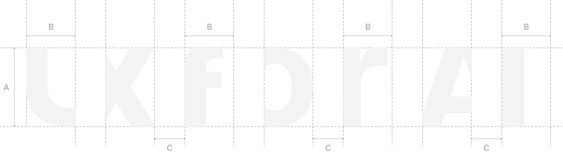
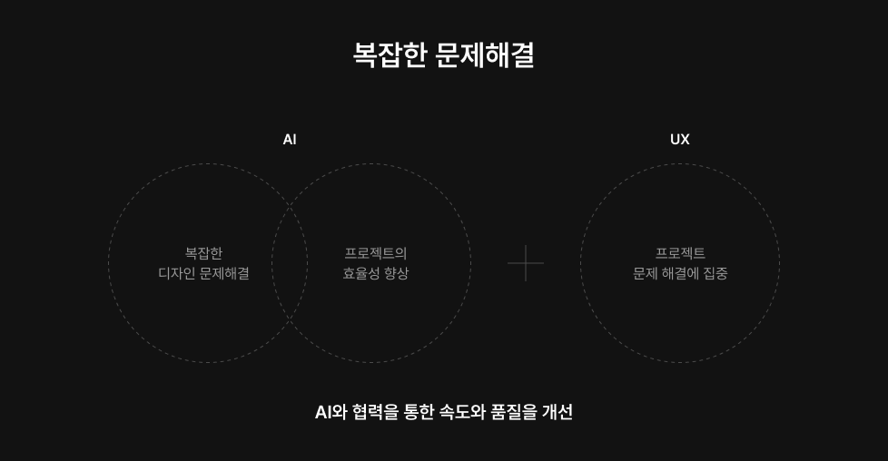
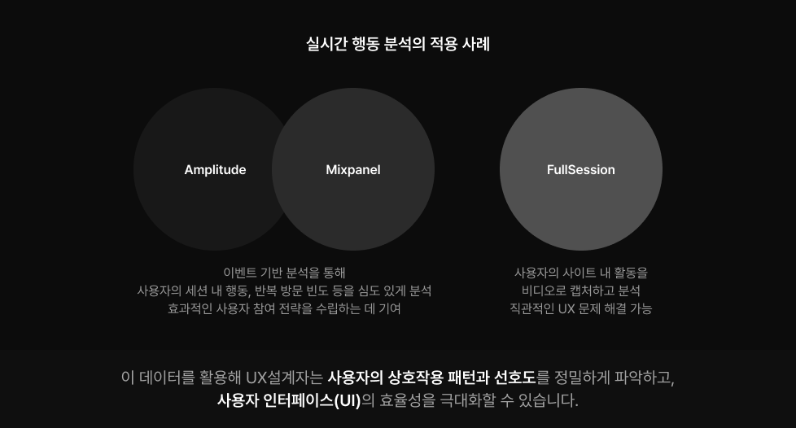

AI. UX의 새로운 패러다임
AI와 협력하는 창의적 업무시스템
AI 기술을 통해 보다 전략적이고, 혁신적인UX 솔루션을 개발할 수 있습니다. 
프로젝트 관리 최적화
UX 프로세스의 관리를 간소화하여 시간과 비용을 절약하며,프로젝트의 전반적인 실행을 간소화합니다.
창의적 아이디어 자동 생성
AI 도구는 초기 디자인 개념을 프로토타입으로 생성하고, 이를 바탕으로 빠르게프로젝트 방향성에 대한 다각도의 접근을 지원합니다.
이는 특히 신속한 아이디어 검증과 개발에서 큰 도움이 됩니다.
사용자 행동패턴 이해와
실시간 데이터 분석
사용자 경험(UX) 설계에 있어 필수적인 역할을 합니다. 
AI 기반 예측 기능과
사용자 맞춤형 디자인 전략
AI와 UX의 결합은 단순한 기술적 통합을 넘어,
서비스 기획적인 사고와 사용자 중심의 접근 방식을 혁신적으로 확장시킬 것입니다.
이러한 동향은 앞으로도 지속.가속화 될 것이며,
AI가 접목된 UX를 활용하여 보다 정교하고 개인화된 사용자 경험을 제공하게 될 것입니다.